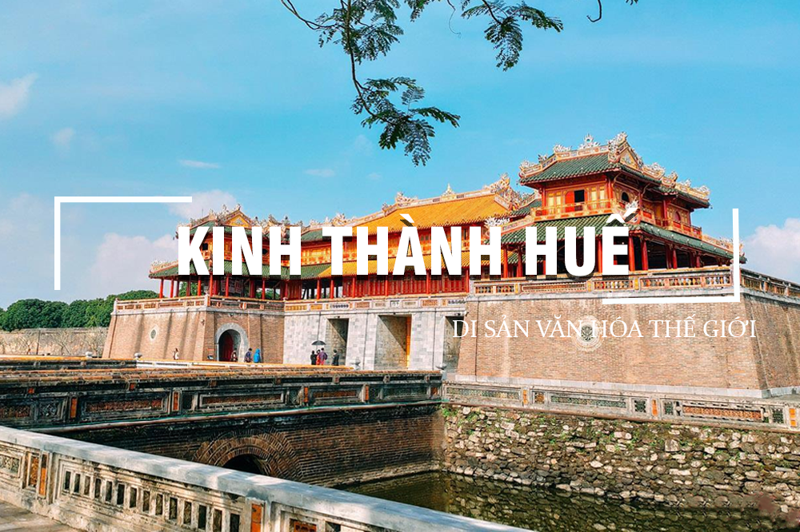
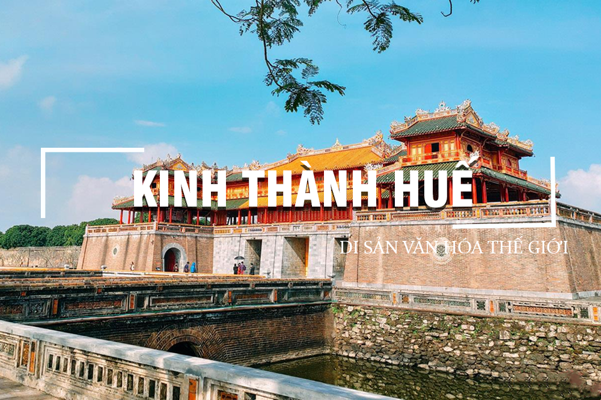

HUẾ
Vẻ Đẹp cổ kính giữa lòng miền Trung

Chùa Thiên Mụ là ngôi chùa cổ kính và nổi tiếng nhất xứ Huế, nằm trên đồi Hà Khê nhìn ra dòng sông Hương thơ mộng. Với tháp Phước Duyên cao vút và khuôn viên thanh tịnh, nơi đây là biểu tượng tâm linh của người dân cố đô.
Chùa được xây dựng vào năm 1601 bởi chúa Nguyễn Hoàng, trải qua nhiều lần trùng tu và mở rộng dưới triều Nguyễn. Chùa gắn liền với lịch sử Phật giáo miền Trung và từng là trung tâm hoạt động văn hóa, chính trị trong các thời kỳ lịch sử.

Chùa Thiên Mụ về đêm mang đến cảm giác yên bình và linh thiêng. Ánh sáng từ tháp Phước Duyên phản chiếu trên mặt sông tạo nên khung cảnh huyền ảo. Buổi tối tại đây rất yên tĩnh, lý tưởng cho thiền định hoặc dạo chơi nhẹ nhàng.
Chiêm ngưỡng tháp Phước Duyên, điện Đại Hùng, bia đá và các hiện vật Phật giáo quý hiếm.
Những câu chuyện gắn với triều Nguyễn, phong trào đấu tranh, văn hóa Phật giáo Huế.
Hóa thân thành hoàng hậu, quan văn, võ tướng… và chụp ảnh trong không gian cung điện cổ kính.
Xuống bậc đá dưới chân chùa để ngắm cảnh sông, gió mát và bình yên.
Vị dẻo thơm, thường bán trước cổng chùa.
Dẻo mềm, nhân tôm thịt đậm đà.
Món chè đặc trưng được nấu từ bắp nếp vùng Kim Long gần chùa.

 
